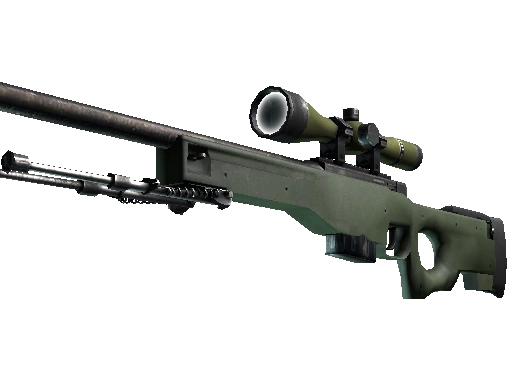
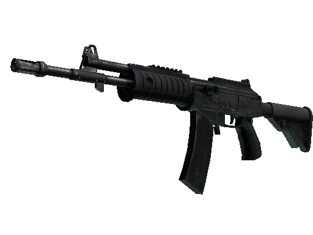
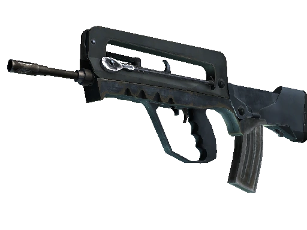

Rifles
AK-47

M4A1-S

M4A4

AWP
GALIL AR
FAMAS
SG 553

AUG

G3SG 1


Valor: $2700
Munição 30/90
Dano: Alto
Alcance: Alto
Lado da compra:TR
Rate of fire: 600 RPM (Rounds per minute)
O AK-47, ou AK como é oficialmente conhecida, também conhecida como Kalashnikov, é um fuzil de assalto de calibre 7,62x39mm
criado em 1947 por Mikhail Kalashnikov e produzido na União Soviética pela indústria estatal IZH. É a arma de fogo originária
da família de fuzis Kalashnikov.
No CS, basta um hit na cabeça para a AK-47 eliminar o adversário e seu preço de $2700 faz com que o lado TR tenha uma ecônomia muito forte. Essas caracteristicas tornam a AK o melhor rifle do jogo.
Por conta do seu baixo custo, torna possível fazer um round econômico comprando a AK com colete sem capacete, ou uma AK sem colete
vulgo AK heroi.
Valor: $2900
Munição 25/75
Dano: Alto
Alcance: Alto
Lado da compra:CT
Rate of fire: 600 RPM (Rounds per minute)
A carabina M4 é uma variante mais curta e mais leve do rifle M16A2. A M4 é uma carabina alimentada com um carregador de 25 munições no calibre 5,56×45mm NATO, inventada pela Colt.
No CS ela é uma arma disponivel para compra do lado CT e possui um recuo baixo. Ela entrou no meta recentemente depois de buffs que deram na arma e o reajuste de preço para $2900,
porém a mesma possui o rate of fire abaixo da sua variavél M4A4.
Com seu preço de $200 a menos que a M4A4, faz com que a econômia do lado CT fique mais amigavél, essa diferença proporciona a compra de uma flash-bang para as utilitárias
Valor: $3100
Munição 30/90
Dano: Alto
Alcance: Alto
Lado da compra:CT
Rate of fire: 666 RPM (Rounds per minute)
A carabina M4 é uma variante mais curta e mais leve do rifle M16A2. A M4 é uma carabina alimentada com um carregador de 25 munições no calibre 5,56×45mm NATO, inventada pela Colt.
No CS ela é uma arma disponivel para compra do lado CT e possui um recuo baixo.
É a variação da M4A1-S com mais munições no carregador, sem silenciador e com o rate of fire maior. Porém o que a tira do meta é o
seu preço $200 dolares maior do que a versão com silenciador e isso faz total diferença em manter uma ecônomia estavel no lado CT.
Valor: $4750
Munição 10/30
Dano: Alto
Alcance: Alto
Lado da compra:CT ou TR
Rate of fire: 41 RPM (Rounds per minute)
O Arctic Warfare Magnum é uma das plataformas de fuzil de precisão mais utilizadas no mundo, especialmente pelos países do grupo G7. Foi desenvolvido pela empresa britânica Accuracy International
utilizando o calibre .338 Lapua Magnum.
É a arma de maior dano do CS, elimina o inimigo com apenas um tiro acima da cintura. É uma arma de alto risco e de alta recompensa
por conta dessas caracteristicas, mas por ser uma sniper, a mesma possui rate of fire muito baixo de 41 RPM (Rounds per minute) e isso faz com que
se vc errar o primeiro tiro, abre a janela para que vc seja eliminado.
Uma curiosidade é que o jogador brasileiro Cogu (considerado o melhor jogador da versão 1.6) revolucionou a maneira de se jogar de AWP. Ele jogava de maneira agressiva na época encurtando a distância
nas gun fights com a awp. Essa maneira de se jogar se permanece até hoje entre os jogadores de AWP.
Valor: $1800
Munição 35/90
Dano: Médio
Alcance: Alto
Lado da compra:TR
Rate of fire: 666 RPM (Rounds per minute)
O Galil AR é uma ver posterior ao Galil ACE 22, um fuzil israelita produzido pela Israel Weapon Industries.
O ACE 22 é uma versão com o cano médio do IWI Galil ACE series, produzido desde 2008. No jogo o nome vem diferente
mas pertence a mesma familia de armas, a Galil AR.
No jogo é o rifle mais barato possui um bom rate of fire, porem também possui um recuo moderado. O que a diferencia dos
outros rifles é sua capacidade de 35 munições no carregador, 5 a mais que o comum. É uma boa opção para os rounds forçados
do lado TR e ou boa opção também para papar um eco, pois ela mata com um hit na cabeça caso o adversário esteja sem colete.
Valor: $2050
Munição 25/90
Dano: Médio
Alcance: Alto
Lado da compra:CT
Rate of fire: 666 RPM (Auto) / 800 RPM (Burst)
FAMAS é um fuzil de assalto de origem francesa, desenvolvido e fabricado pela MAS em 1978, e atualmente
fabricado pela sua sucessora, a Nexter. O fuzil FAMAS começou a ser concebido em 1967 pela Saint-Étienne,
projetado pelos engenheiros franceses Paul Tellié e Alain Coubes.
No jogo é o rifle mais barato e potente disponivél para compra no lado CT. A mesma possui dois modos de disparo
full-auto e burst (rajada de 3 tiros), a FAMAS compartilha essa caracteristica com a Glock 18 tendo em vista
que o modo de disparo burst aumenta o fire rate da arma de 666 RPM para 800 RPM.
Valor: $3000
Munição 30/90
Dano: Alto
Alcance: Alto
Lado da compra:TR
Rate of fire: 545 RPM (Rounds per minute)
O SG 553 é um fuzil de assalto fabricado pela Swiss Arms AG (anteriormente uma divisão da Schweizerische Industrie
Gesellschaft, SIG, agora conhecida como SIG Holding AG) na Suíça. "SG" é uma abreviatura de Sturmgewehr (fuzil de assalto).
O fuzil é baseado no predecessor SIG SG 540 em 5,56×45mm NATO.
No jogo, o SG 553 é o sucessor da Krieg 552 dos jogos anteriores. E como a krieg 552, o SG553 é e equipado com uma mira telescópica
que permite com que o jogador use apertando o botão direito do mouse, que dará um zoom de 3x e o recoil é reduzido, porém a mobilidade
do jogador seja reduzida e a vizão periférica também.
O SG553 é o unico rifle do jogo que da o mesmo dano no jogador com ou sem colete, ou seja, com ou sem colete o HS é fatal.
O SG553 é o rifle que tem a menor velocidade de movimento comparado aos outros rifles. E é significantemente mais caro que a AK-47,
sendo o rifle mais caro do lado TR, e também, é o rifle com o menor rate of fire de todos.
Valor: $3300
Munição 30/90
Dano: Alto
Alcance: Alto
Lado da compra:CT
Rate of fire: 600 RPM (Rounds per minute)
O Steyr AUG é um fuzil de assalto bullpup 5,56×45mm NATO austríaco, projetado nos anos 60 pela Steyr-Daimler-Puch
e agora fabricado pela Steyr Mannlicher GmbH & Co KG. Foi adotado pelo exército austríaco como StG 77 em 1978, onde
substituiu o rifle automático 7,62×51mm StG 58
No jogo, como a SG553 a AUG possui uma mira telescópica com um zoom médio de 3x. E uma das caracteristicas da AUG é a precisão
no seu primeiro tiro quando ela está com o zoom ativado e ela possui um recoil mederadamente alto, e sem mira quando o jogador
segura o dedo (vulgo atirar no full-auto) o recoil da AUG é extremamente alto, fazendo sua mira ir para o espaço. O melhor jeito
de se atirar de AUG é dar rajadas curtas de 3 tiros, tendo em vista que o primeiro tiro da AUG sai praticamente reto.
Valor: $5000
Munição 20/90
Dano: Alto
Alcance: Alto
Lado da compra:CT
Rate of fire: 240 RPM (Rounds per minute)
A Gewehr 3 (G3) (em alemão: Gewehr 3, lit. "Fuzil 3") é uma espingarda de combate de fogo selectivo usada nos Exercitos Português e Brasileiro,
(atualmente descontinuada pelas Forcas Armadas Portuguesas desde 16 de Setembro de 2019, estando a ser substituída pela nova arma Belga FN SCAR-L
e pela FN SCAR-H) Fabricada pela Heckler & Koch e adaptada como a espingarda de serviço pela Bundeswehr em 1959. Foi adaptada e encontra-se atualmente
em utilização por vários países à volta do mundo.
No jogo ela é uma arma semi-automatica (da um tiro por vez), possui uma mira telescópica semelhante a AWP e tem um dano extremamente alto no torso, tornando possível
eliminar o adversário com 2 hits mesmo de colete. E também é o rifle mais caro do jogo.
No Brasil ela é conhecida como "teco-teco" junto da SCAR-20 por conta de dar um tiro por vez, e também conhecida como arma de noob por ser extremamente forte.
Mas em alto nível ela acaba sendo inviável por conta do seu rate of fire extremamente baixo e seu preço muito alto, pois no alto nível a precisão do jogador é muito elevada e você é eliminado
rapidamente com um rifle como a M4 ou a AK e a economia se torna insustentável por conta do seu preço muito alto.
Valor: $5000
Munição 20/90
Dano: Alto
Alcance: Alto
Lado da compra:CT
Rate of fire: 240 RPM (Rounds per minute)
O FN SCAR é construído para ser extremamente modular, incluindo mudança de cano para alternar entre calibres.
O fuzil foi desenvolvido pela fabricante belga FN Herstal (FNH) para o Comando de Operações Especiais dos
Estados Unidos (SOCOM) para satisfazer os requisitos da competição SCAR.[8] Esta família de fuzis consistem em dois
tipos principais. O SCAR-L, para "light" (leve), está embutido em cartucho 5,56×45mm NATO e o SCAR-H, para "heavy"
(pesado), está embutido em 7,62×51mm NATO. Ambos estão disponíveis nas variantes Close Quarters Combat (CQC),
Standard (STD) e Long Barrel (LB).
No jogo ela é uma arma semi-automatica (da um tiro por vez), possui uma mira telescópica semelhante a AWP e tem um dano extremamente alto no torso, tornando possível
eliminar o adversário com 2 hits mesmo de colete. E também é o rifle mais caro do jogo.
No Brasil ela é conhecida como "teco-teco" junto da G3SG por conta de dar um tiro por vez, e também conhecida como arma de noob por ser extremamente forte.
Mas em alto nível ela acaba sendo inviável por conta do seu rate of fire extremamente baixo e seu preço muito alto, pois no alto nível a precisão do jogador é muito elevada e você é eliminado
rapidamente com um rifle como a M4 ou a AK e a economia se torna insustentável por conta do seu preço muito alto.